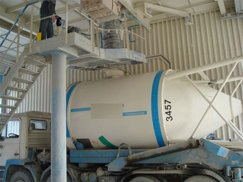
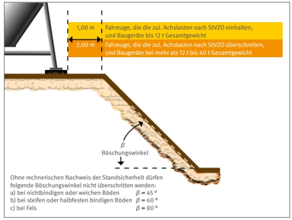
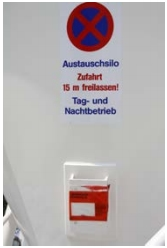
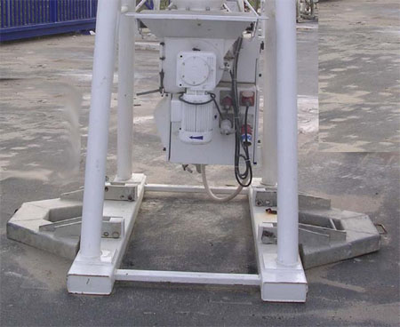
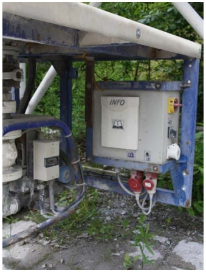

4 |
Schutzmaßnahmen beim Umgang mit transportablen Silos |
|||||||||||||||||||||||||||||||||||||||||||||||||
4.1 |
Organisatorische Schutzmaßnahmen |
|||||||||||||||||||||||||||||||||||||||||||||||||
| 4.1.1 | Arbeitsablauforganisation | |||||||||||||||||||||||||||||||||||||||||||||||||
|
Bei der Bereitstellung transportabler Silos am Einsatzort müssen die möglichen Fahr- und Transportbewegungen im Rahmen einer Arbeitsablaufsorganisation berücksichtigt werden, um eine gegenseitige Gefährdung auszuschließen. Gefährdungen können z. B. auf Baustellen entstehen, wenn zeitgleich mehrere Anlieferungen von Baumaterialien auf der Baustelle eintreffen oder wenn Verkehrswege, die für die Wiederbefüllung oder Abholung des transportablen Silos vorgesehen waren, nicht mehr in ausreichender Breite oder insgesamt nicht mehr zur Verfügung stehen (siehe Abschnitte 4.1.2 und 4.3.4). Die Arbeitsablauforganisation umfasst auch
|
||||||||||||||||||||||||||||||||||||||||||||||||||
| 4.1.2 | Zufahrt zur Einsatzstelle (Aufstellort) | |||||||||||||||||||||||||||||||||||||||||||||||||
| 4.1.2.1 | Der Betreiber oder die Betreiberin hat für eine ausreichende Zufahrt zur Einsatzstelle des transportablen Silos während der gesamten Nutzungsdauer zu sorgen.
Die ausreichende Zufahrt umfasst auch die Aufrechterhaltung von Zufahrtswegen für Fahrzeuge, welche die transportablen Silos befüllen, umsetzen oder abtransportieren. Unter ausreichender Zufahrt sind z. B. ausreichend breite und tragfähige Verkehrswege (Breite mindestens 3,5 m ohne Gegenverkehr, mögliche Achslasten bis 10 t) mit einer der Größe der eingesetzten Fahrzeuge angemessenen Straßenführung (Kurvenradien, Beleuchtung, Wendemöglichkeit) zu verstehen. Siehe auch § 45 Abs. 1 der DGUV Vorschriften 70 und 71 "Fahrzeuge", § 16 der DGUV Vorschriften 43 und 44 "Müllbeseitigung" sowie DIN EN 349 "Sicherheit von Maschinen; Sicherheitsabstände zur Vermeidung des Quetschens von Körperteilen" |
|||||||||||||||||||||||||||||||||||||||||||||||||
| 4.1.2.2 | Die Verkehrsführung ist so zu planen, dass Rückwärtsfahrten nur für den eigentlichen Absetz-/Aufnahmevorgang des transportablen Silos erforderlich sind.
Rückwärtsfahrten können z. B. durch ringförmig angelegte Baustraßen vermieden werden. Einbahnstraßen erhöhen die Verkehrssicherheit. |
|||||||||||||||||||||||||||||||||||||||||||||||||
| 4.1.2.3 | Bei unübersichtlicher Verkehrsführung, eingeschränkten Wegebreiten oder wenn Rückwärtsfahrten erforderlich sind, hat der Betreiber oder die Betreiberin dafür zu sorgen, dass den Versicherten (Fahrer / Fahrerin) Einweiser oder Einweiserinnen gestellt werden.
Siehe auch § 46 der DGUV Vorschriften 70 und 71 "Fahrzeuge". Einweiser oder Einweiserinnen dürfen sich nur im Sichtbereich des Fahrzeugführers und nicht zwischen dem sich bewegenden Fahrzeug und in Bewegungsrichtung befindlichen Hindernissen aufhalten. Sie dürfen während des Einweisens keine anderen Tätigkeiten ausführen. Es empfiehlt sich, den Einweiser oder die Einweiserin mit Warnkleidung nach DIN EN ISO 20471 "Hochsichtbare Warnkleidung; Prüfverfahren und Anforderungen", wie sie auch im Straßenverkehr verwendet wird, auszustatten. |
|||||||||||||||||||||||||||||||||||||||||||||||||
| 4.1.3 | Zugänglichkeit | |||||||||||||||||||||||||||||||||||||||||||||||||
| Der Betreiber oder die Betreiberin hat dafür zu sorgen, dass deren Schalt-, Steuer- und Entnahmeinrichtungen während der gesamten Nutzungsdauer leicht und sicher erreichbar sind.
Dies kann z. B. erreicht werden durch
|
||||||||||||||||||||||||||||||||||||||||||||||||||
| 4.1.4 | Prüfungen vor Inbetriebnahme | |||||||||||||||||||||||||||||||||||||||||||||||||
|
Nach jedem Umsetzen sind transportable Silos mit ihren Zusatzeinrichtungen sowie (bereitgestelltes) Zubehör auf ordnungsgemäße Aufstellung und mögliche Beschädigungen zu prüfen. Diese Prüfung erfolgt in der Regel durch den Betreiber oder die Betreiberin. Der Prüfumfang ergibt sich aus den Betriebsanleitungen der Hersteller. Das Ergebnis der Prüfung ist in geeigneter Form zu dokumentieren, z. B. durch eine Checkliste. Bedingt durch häufiges Umsetzen und erschwerten Einsatzbedingungen, z. B. beim Baustellenbetrieb, unterliegen transportable Silos und ihr Zubehör (elektrische Anschlusskabel, Pump-/Förderschläuche) einem erhöhten Verschleiß. Die Notwendigkeit weiterer Prüfungen, z.B. durch den Hersteller vor Auslieferung, wiederkehrende Prüfungen, kann sich aus § 3 Abs. 3, §§ 10, 14 bis 16 der Betriebssicherheitsverordnung ergeben. |
||||||||||||||||||||||||||||||||||||||||||||||||||
4.2 |
Schutzmaßnahmen gegen Absturz von Personen |
|||||||||||||||||||||||||||||||||||||||||||||||||
| 4.2.1 | Befüllen und Wartungsarbeiten am Befüllort | |||||||||||||||||||||||||||||||||||||||||||||||||
| 4.2.1.1 | Versicherte, die transportable Silos besteigen, haben Schutzeinrichtungen gegen Absturz zu benutzen.
Bei transportablen Silos, die im befüllten Zustand ausgeliefert werden, müssen Versicherte in der Regel die entsprechenden Öffnungen von Hand öffnen, den Verladerüssel einführen und die Öffnungen wieder verschließen. Bei transportablen Silos, die stehend befüllt werden, sind in der Regel klappbare oder schwenkbare Geländer und Übergänge an der Befüllstation vorhanden. Bei transportablen Silos, die liegend befüllt werden, sind in der Regel klappbare Übergänge vorhanden (siehe Abb. 1).  Abb. 1: Ortsfeste Beladestelle transportabler Silos
|
|||||||||||||||||||||||||||||||||||||||||||||||||
| 4.2.1.2 |
Wird durch die vorhandene Schutzeinrichtung ein Absturz nicht sicher verhindert, hat der Unternehmer oder die Unternehmerin zusätzliche Maßnahmen gegen Absturz zu treffen.
Ein nicht ausreichender Schutz gegen Absturz kann z. B. bei der Befüllung transportabler Silos verschiedener Durchmesser oder Höhen auftreten. Mögliche Maßnahmen können z. B. sein:
sofern keine anderen sicherheitstechnischen Maßnahmen möglich sind:
|
|||||||||||||||||||||||||||||||||||||||||||||||||
| 4.2.2 | Besteigen am Einsatzort | |||||||||||||||||||||||||||||||||||||||||||||||||
|
Sollen Versicherte transportable Silos am Einsatzort besteigen, müssen geeignete Zugangsmittel zur Verfügung stehen und geeignete Schutzmaßnahmen gegen Absturz getroffen werden. Geeignete Zugangsmittel können z. B. fest installierte Leitern mit Rücken- bzw. Steigschutz nach DIN EN 353-1 "Persönliche Schutzausrüstung gegen Absturz - Mitlaufende Auffanggeräte einschließlich einer Führung - Teil1: Mitlaufende Auffanggeräte einschließlich fester Führung", Hubarbeitsbühnen oder Krane mit Personenaufnahmemittel sein. Geeignete Schutzeinrichtungen gegen Absturz sind z. B.
Sofern keine anderen sicherheitstechnischen Maßnahmen möglich sind, sind geeignete persönliche Schutzausrüstungen gegen Absturz nach der DGUV Regel 112-198 "Benutzung von persönlichen Schutzausrüstungen gegen Absturz" zu benutzen. |
||||||||||||||||||||||||||||||||||||||||||||||||||
4.3 |
Schutzmaßnahmen gegen Umstürzen/Abstürzen transportabler Silos |
|||||||||||||||||||||||||||||||||||||||||||||||||
| 4.3.1 | Umstürzen beim Aufnehmen | |||||||||||||||||||||||||||||||||||||||||||||||||
|
Die Spediteure dürfen nur solche Einrichtungen verwenden, die hierfür geeignet sind. Dies sind z. B.
|
||||||||||||||||||||||||||||||||||||||||||||||||||
| 4.3.2 | Umstürzen beim Absetzen/Aufstellen transportabler Silos | |||||||||||||||||||||||||||||||||||||||||||||||||
|
Die Spediteure haben für eine standsichere Aufstellung zu sorgen. Bei der Aufstellung transportabler Silos
Tabelle 1: Anhaltswerte für zulässige Bodenpressung Der Betreiber oder die Betreiberin hat dafür zu sorgen, dass die Bedingungen für eine standsichere Aufstellung gegeben sind. Diese Bedingungen sind vom Unternehmen, das transportable Silos aufstellt, dem Betreiber oder der Betreiberin mitzuteilen. Solche Bedingungen sind z.B:
Bedingungen für eine standsichere Aufstellung sind auch der Betriebsanleitung oder den Aufstellbedingungen der transportablen Silos zu entnehmen.
 Abb. 2 Sicherheitsabstand zu Baugruben in Verbindung mit den zulässigen Böschungswinkeln
Die Betriebsanleitung wird vom Hersteller der transportablen Silos erstellt und in geeigneter Weise übergeben (siehe Abb. 3). |
||||||||||||||||||||||||||||||||||||||||||||||||||
| 4.3.3 | Umstürzen beim Betreiben
Die Betreiber oder Betreiberinnen haben dafür zu sorgen, dass die standsichere Aufstellung erhalten bleibt. Die Standsicherheit kann z. B. gefährdet werden durch
Geeignete Maßnahmen können sein:
 Abb. 3 Übergabemöglichkeit der Betriebsanleitung  Abb. 4 Verbreiterung der Aufstandsflächen zur Erhöhung der Standsicherheit
|
|||||||||||||||||||||||||||||||||||||||||||||||||
| 4.3.4 | Umstürzen/Abstürzen beim Umsetzen
Die Betreiber oder Betreiberinnen haben dafür zu sorgen, dass ein Umsetzen nur mittels der dafür in der Betriebsanleitung des Herstellers ausdrücklich zugelassenen Geräte erfolgt. Transportable Silos werden mit vom Hersteller vorgesehenen Versetzfahrzeugen bewegt. Ob sich ein transportables Silo für den Hebezeugbetrieb eignet, ist der Betriebsanleitung zu entnehmen. Darüber hinaus sind die dort genannten Bedingungen zu beachten, z. B. die mögliche Einschränkung, dass ein Transport mit Hebezeugen nur im unbefüllten Zustand oder mittels spezieller Lastaufnahmeeinrichtungen zulässig ist. |
|||||||||||||||||||||||||||||||||||||||||||||||||
4.4 |
Schutzmaßnahmen gegen Gefahrstoffe und Stäube |
|||||||||||||||||||||||||||||||||||||||||||||||||
| 4.4.1 | Kontrolliertes Befüllen | |||||||||||||||||||||||||||||||||||||||||||||||||
| Die Spediteure haben dafür zu sorgen, dass Schüttgüter nicht unkontrolliert entweichen. Die in den Betriebsanleitungen aufgeführten Betriebsdrücke dürfen nicht überschritten werden. In der Regel werden staubförmige Schüttgüter am Aufstellort in die transportablen Silos mit Druckluft eingeblasen. Zu einem unkontrollierten Austritt kann es insbesondere kommen, wenn
Ein unzulässiger Überdruck kann zum Zerplatzen des transportablen Silos führen. Ein unzulässiger Überdruck und eine Zerstörung der Filter kann auch durch zu hohem Luftdruck beim Einblasen des Schüttguts auftreten. Die zulässigen Einblasdrücke werden vom Hersteller der transportablen Silos in der Betriebsanleitung festgelegt. |
||||||||||||||||||||||||||||||||||||||||||||||||||
| 4.4.2 | Kontrollierte Entnahme | |||||||||||||||||||||||||||||||||||||||||||||||||
|
Das Schüttgut darf nur durch die vom Hersteller dazu vorgesehenen Entnahmeeinrichtungen oder -öffnungen aus transportablen Silos entnommen werden. Die Druckausgleichsöffnungen müssen wirksam sein, um einen Unterdruck im transportablen Silo zu verhindern. Übliche Entnahmeeinrichtungen sind z. B.
Unzulässiger Unterdruck im transportablen Silo kann zum Versagen der Silokonstruktion führen. Dieser kann z. B. auftreten
|
||||||||||||||||||||||||||||||||||||||||||||||||||
|
Ein Hautkontakt mit dem Schüttgut oder ein Aufwirbeln des Schüttguts bei der Entnahme muss soweit möglich vermieden werden. Dies kann z. B. durch
erreicht werden. Abhängig vom Schüttgut kann bei einer Staubentwicklung
Gegebenenfalls müssen geeignete Atemschutzgeräte und Schutzhandschuhe getragen werden; siehe auch DGUV Regeln 112-190 "Benutzung von Atemschutzgeräten" und 112-195 sowie 112-995 "Benutzung von Schutzhandschuhen". Hinweise zum Explosionsschutz finden sich in §9 Abs. 4 der Betriebssicherheitsverordnung sowie in der DGUV Regel 113-001 "Explosionsschutz-Regeln (EX-RL)". Hinweise beim möglichen Auftreten mineralischer Stäube finden sich in der Gefahrstoffverordnung. |
||||||||||||||||||||||||||||||||||||||||||||||||||
4.5 |
Schutzmaßnahmen gegen elektrischen Strom |
|||||||||||||||||||||||||||||||||||||||||||||||||
| 4.5.1 | Abstand zu Freileitungen
Die Spediteure haben die erforderlichen Sicherheitsabstände zu elektrischen Freileitungen einzuhalten (siehe Tabelle 2).
Tabelle 2: Mindestabstände zu Freileitungen |
|||||||||||||||||||||||||||||||||||||||||||||||||
| 4.5.2 |
Elektrischer Anschluss
Benötigt das transportable Silo elektrische Energie, z. B. zum Betrieb von Misch- und Entnahmeeinrichtungen, so sind die Vorgaben des Herstellers des transportablen Silos zu beachten. Hinweise finden sich in der Betriebsanleitung des Herstellers des transportablen Silos. Werden transportable Silos auf Baustellen eingesetzt, ist zusätzlich die DGUV Information 203-006 "Auswahl und Betrieb elektrischer Anlagen und Betriebsmittel auf Bau- und Montagestellen" zu beachten. Elektrische Betriebsmittel auf Baustellen müssen von einem besonderen Speisepunkt aus versorgt werden. Üblich sind Baustromverteiler nach DIN EN 61439-4 (VDE 0660-600-4) "Niederspannungs-Schaltgerätekombinationen; Teil 4: Besondere Anforderungen an Baustromverteiler (BV)". |
|||||||||||||||||||||||||||||||||||||||||||||||||
4.6 |
Schutzmaßnahmen gegen sonstige Gefährdungen |
|||||||||||||||||||||||||||||||||||||||||||||||||
| 4.6.1 | Instandhaltung, allgemein | |||||||||||||||||||||||||||||||||||||||||||||||||
|
In einer Betriebsanweisung sind von dem Betreiber oder der Betreiberin die erforderlichen Reinigungs- und Wartungsarbeiten festzulegen. Auf vorhersehbare Störungen und die hierbei erforderlichen Maßnahmen ist hinzuweisen. Die Versicherten haben die Arbeiten entsprechend der Betriebsanweisung durchzuführen. Die Versicherten der Betreiber verfügen in der Regel über keine ausreichenden Kenntnisse der speziellen Gefährdungen bei Instandhaltungsarbeiten an transportablen Silos. Daher sollen nur die in der Betriebsanweisung angegebenen Tätigkeiten durchgeführt und Arbeitabläufe eingehalten werden. Grundlage der Betriebsanweisung ist die jeweilige Betriebsanleitung des Herstellers (siehe Abb. 5).  Abb. 5 Steuereinheit mit Hauptschalter und Hinweisen zum sicheren Betrieb. Spezielle Gefährdungen bestehen z. B.
|
||||||||||||||||||||||||||||||||||||||||||||||||||
| 4.6.2 | Schutzmaßnahmen bei Instandhaltungsarbeiten | |||||||||||||||||||||||||||||||||||||||||||||||||
| 4.6.2.1 | Mit Instandhaltungsarbeiten an transportablen Silos darf erst begonnen werden, nachdem Gefahr bringende Bewegungen durch bewegliche Einrichtungen zum Stillstand gekommen sind und ein unbefugtes, irrtümliches oder unerwartetes Ingangsetzen sicher vermieden ist.
Ein Ingangsetzen wird z. B. sicher vermieden, wenn abschließbare Schalter mit Trenneigenschaften (Netztrenneinrichtungen) abgeschaltet und verschlossen sind. |
|||||||||||||||||||||||||||||||||||||||||||||||||
| 4.6.2.2 | Zusätzlich muss das Wirksamwerden gespeicherter Energien sicher vermieden werden.
Gefahrbringende Bewegungen können z. B. vermieden werden,
|